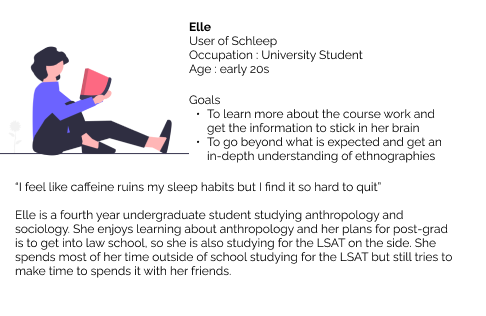
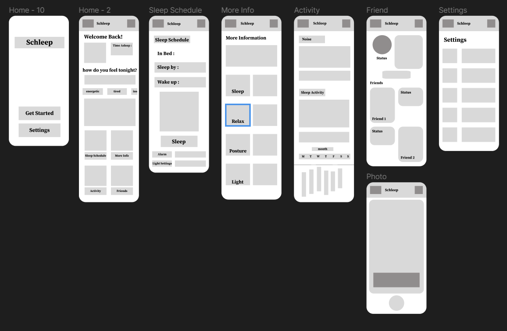
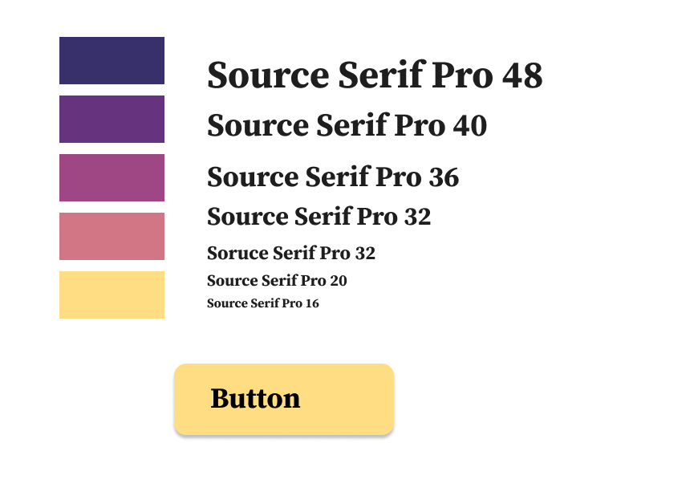
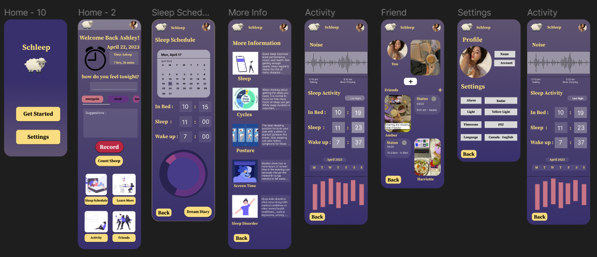
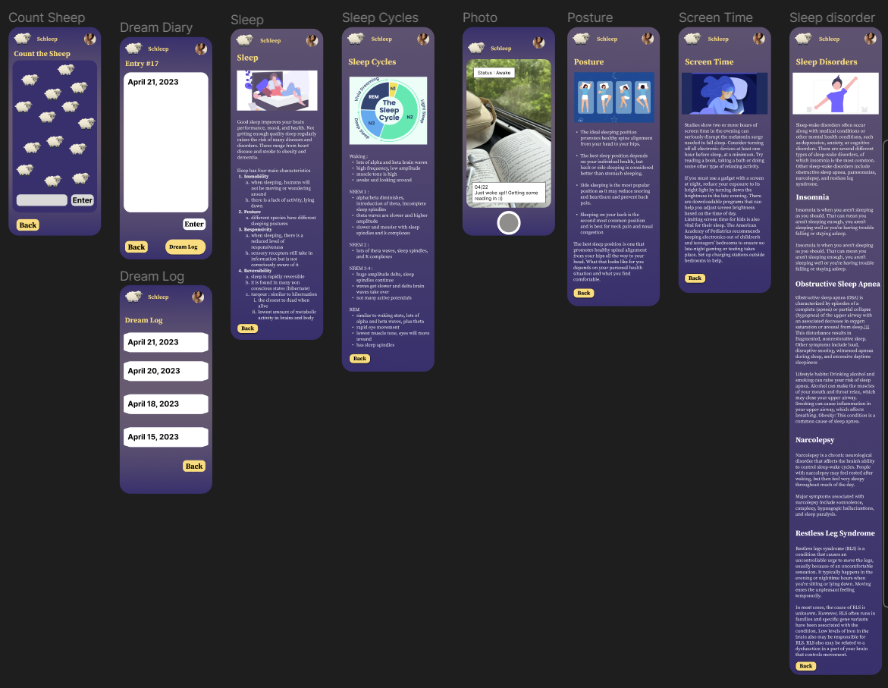
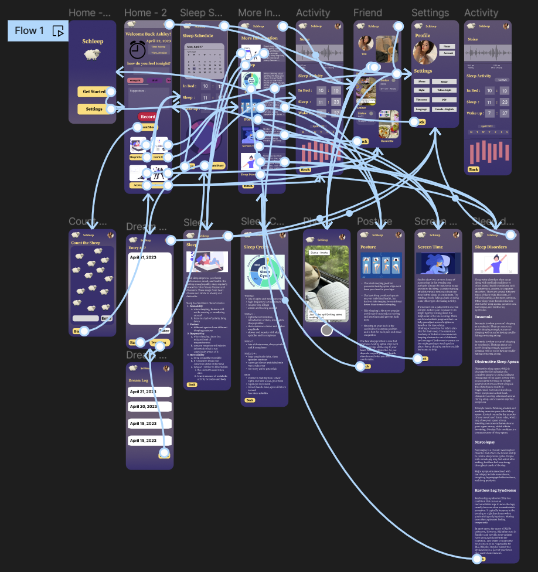

Generic Page

UX/UI Design / Research / Wirefrmaing / Prototyping
Background
I started this project as a response to one of the problems that I have noticed my friends and family suffer from : poor sleep quality. Sleep is very important for an individual's daily life; it is what allows them to function throughout the day and has been shown to improve cognitive functions and memory. I wanted to examine different ways people would be able to take initiative of their own sleep, and turn it into a more personalized experience for users. Through research, I discovered that the overarching problem was the lack of good sleep habits that were formed due to lifestyle and environmental factors.
Goals
Creating an end-to-end mobile application that allows users to set personal sleep schedules, improve their sleep habits, and inform them of the benefits of sleep, thus minimizing poor sleep quality.
Problem
As a university student, I;ve noticed that many of my friends have problems sleeping, whether it is problems falling asleep or problems staying asleep. And these problems are can be caused by a variety of factors, such as stress, insomnia, or the physical environment. Even as you sleep, studies have shown that there can be multiple factors disrupting your sleep, such as exposure to blue light during the nighttime, circadian rhythm, sleep posture, and more. These factors can be hard to control; the best that we can do is try to have the best sleep quality we can despite these challenges.
My Impact
For this project, I validated the need for the original product I had in mind and leveraged data from research to create a mobile application product as a solo designer.
Research
Goals
Below are the areas I'd like to explore during the user research
I want to understand :
Methodologies
Secondary research on top products related to sleeping to determine the gap in the market. In-depth user interviews with 10 students or working professionals who would like to improve their sleep quality.
Competitive Audit
For part of this project, I decided to explore top rated and popular apps for improving sleep to compare key features and see what problems they address. I discovered that the sleep applications address different things; some address meditation, some adress sleep schedules, and some address waking up in the morning
Many apps do not offer that much free content aimed at helping users improve their sleep schedule during the research phase. As I'd like to set my users for the long-time success, I realized that this can be achieved by designing a product that addresses the problems that occur when trying to fall asleep. Synthesized data from the user interviews only confirmed that assumption.
User Interviews
Research Synopsis
Define
User Persona
After I compiled the outtakes from the research into the affinity map, I was able to create a persona that represents the main user group.
 h3>Use Scenario
h3>Use Scenario
After creating my persona, I decided to place her in a specific situation when she can use the product. The primary use case was inspired by synthesized research from the user interviews, competitive analysis showing the niche in the market, and a persona I could fully emphatize with.
The mobile application allows her to set her sleep schedule according to her daily habits and sets up the user for long-time success by using interactive methods to keep the user accountable to their goals, thus improving sleep habits/
Ideation
Initial Task Flows
After having defined the features of the app, I created flows for the main tasks
User Flow : Launch the app to see if you are able to set a time to sleep and wake up by
This user flow assumes the user is using the app for the first time
Task : Take a picture to share it with your friends
Learn more about sleep posture
App Navigation
Based on the user flow, task flows, and feature roadmap, I designed the simple app map that is functional and easy to navigate
Lo-Fi Wireframes
The first version of the lo-fi wireframes allowed me to run early usability tests and discover the priority revisions that need to be implemented ASAP. This decreased the number of iterations to the later versions with all effort being put into creating the hi-fi interface. The version below inccludes iterations made mainly to the information architecture such as :
UI Kit
I created the UI kit that reflects the Schleep brand adjectives. As the name of the app is Schleep, it helps users fall asleep with the visual use of sleep.
Prototype and Test
Hi-Fi Prototype
The prototype can be accessed here :
  Usability Testing
I tested the first version of the prototype with 5 hypothetical users to determine the necessary revisions to make the overall experience more intuitive and pleasant.
Main pain points that were discovered during the tests and addressed in the iteration:
Fix : add a feature where it allows users to input the desired time
Fix : Add a universal navigation bar to each screen
Fix : Added a universal header that accounts for the existance of buttons and other features that are part of their phone architecture
Conclusion
While working on this project I learned to really trust the research and discovery process as I started working on it with a very different assumption and initial idea on how I wanted to approach the problem. In the end, I learned about different possibilities and solutions to satisfy user needs and how to integrate those possible solutions into the app. I also learnt that it is alright to take a step back and restart the process if you are not satisfied with where its going, whether it is a visual aspect or information architecture. I also learned that it is important to ask for another set of eyes for the product; eventually there will be times where I would get burnt out and frusterated that I couldn't figure something out, but when I asked others who had no knowledge of the project to look it over for it, they would provide me suggestions on what I can improve, which I really appreciated.